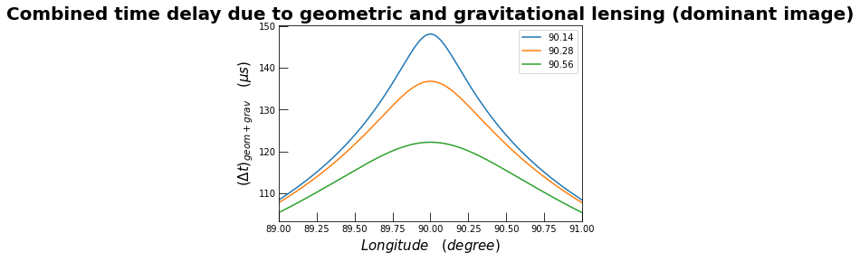
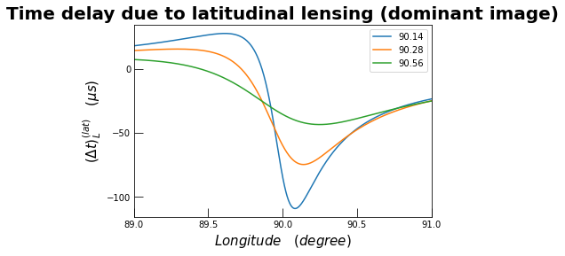
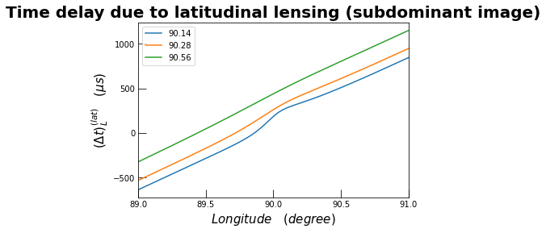
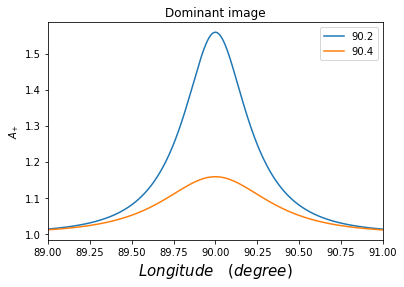
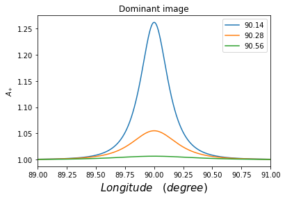

[ ]:
!pip install peristole
Looking in indexes: https://pypi.org/simple, https://us-python.pkg.dev/colab-wheels/public/simple/
Requirement already satisfied: peristole in /usr/local/lib/python3.7/dist-packages (1.0.8)
[ ]:
import peristole as peri
import matplotlib.pyplot as plt
[ ]:
peri.demo.details()
system parameters
mass of secondary pulsar: 1.25 solar mass
orbital semimajor axis: 878400000.0 meters
eccentricity of system: 0.0878
longitude of periastron: 73.8
orbital inclination angle(s): [90.14, 90.28, 90.56]
spin period of primary self: 0.0227 seconds
angle between spin axis and magnetic axis: 4
to be filled: 45
opening angle: 50
to be filled: 115
[ ]:
pulsar2=peri.demo
[ ]:
pulsar2.details()
system parameters
mass of secondary pulsar: 1.25 solar mass
orbital semimajor axis: 878400000.0 meters
eccentricity of system: 0.0878
longitude of periastron: 73.8
orbital inclination angle(s): [90.14, 90.28, 90.56]
spin period of primary self: 0.0227 seconds
angle between spin axis and magnetic axis: 4
to be filled: 45
opening angle: 50
to be filled: 115
[ ]:
peri.delay_combined(pulsar2)

[ ]:
peri.delay_lat(pulsar2)

[ ]:
peri.delay_lat(pulsar2,1)

this shows the error thrown when required attributes haven’t been declared
[ ]:
pulsar1 = peri.pulsar()
pulsar1.mass = 1.25
pulsar1.axis=3E8
pulsar1.ecc=0.5
pulsar1.omega=50
pulsar1.angle=[90.2, 90.4]
[ ]:
peri.amp_plot(pulsar1)

[ ]:
peri.delay_lat(pulsar1)
---------------------------------------------------------------------------
AttributeError Traceback (most recent call last)
<ipython-input-23-c88f180ab287> in <module>
----> 1 peri.delay_lat(pulsar1)
/usr/local/lib/python3.7/dist-packages/peristole/lat_td.py in delay_lat(pulsar, flag, dummy)
30 R_g = 2*G*pulsar.mass*M_0/c**2
31 lat_delay = np.zeros((len(pulsar.angle), len(psi_vals)))
---> 32 chi0=(np.sin(np.radians(pulsar.alpha))*np.sin(np.radians(pulsar.big_phi0)))/((np.cos(np.radians(pulsar.alpha))*np.sin(np.radians(pulsar.zeta)))-(np.cos(np.radians(pulsar.big_phi0))*np.sin(np.radians(pulsar.alpha))*np.cos(np.radians(pulsar.zeta))))
33
34 for j in range(len(pulsar.angle)):
AttributeError: 'pulsar' object has no attribute 'alpha'
[ ]:
peri.amp_plot(peri.demo)

[ ]: